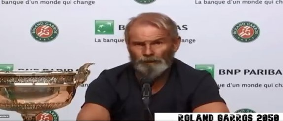

| Jesús Mariano Martín@JMMartin37 |
|  | Twitter @WeAreTennis |
La victoria de Rafa Nadal en Roland Garros, donde logró su decimotercer título y su 20º Grand Slam para igualar la marca de Roger Federer ha sido uno de los grandes momentos de la temporada de tenis en este atípico 2020.
Durante el torneo y después de conquistar el título varios medios y las redes sociales se hicieron eco del dominio de Nadal sobre la tierra batida de París, comparándole con una estatua, recuperando las palabras de Nico Almagro en 2008: "con 65 años seguirá ganando Roland Garros" o bien haciendo montajes fotográficos sobre Nadal afirmando que pasarían 30 o 40 años y seguiría ganando en París.
Este miércoles la cuenta de Twitter 'We Are Tennis (@WeAreTennis) publicó un simpático vídeo con el mensaje "Rafa Nadal tras ganar su 38º título de Roland Garros en 2050" junto a un vídeo en el que Nadal aparece caracterizado como si tuviera 64 años en un montaje sobre unas declaraciones suyas tras ganar el título en París.
Por eso para Toni Nadal “la adaptación implica un riesgo, implica hacer cosas que necesariamente no tenemos completamente la certeza de que irá bien, pero hay que tomar la determinación de arriesgarse”. Y eso no solamente es tenis, es vida.1
| Grand Slam | Open Australia | US OPEN | Rolan Garros | Wimbledon | Totales |
|---|---|---|---|---|---|
| Tenista | |||||
| SUMAS | 15 | 12 | 15 | 15 | 57 |
| TOTALES | 57 Grandes Slams | ||||
| Nokak Dlokovic | 8 | 3 | 1 | 5 | 17 |
| Rafael Nadal | 1 | 4 | 13 | 2 | 20 |
| Roger Federer | 6 | 5 | 1 | 8 | 20 |
Grandes Campeones:
| 1, 2, y 3 | 4 | ||
| 5 | 6 | 7 y 11 | 8 |
| 9 y 13 | 10 | 12 | |
| 14 | 15 y 16 | ||
Propiedas del texto: